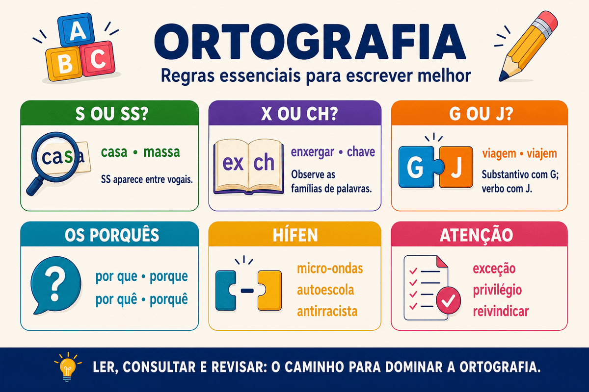

Ortografia: regras, exemplos, dúvidas frequentes e quiz
A ortografia estabelece as convenções utilizadas para escrever corretamente as palavras de uma língua. Ela orienta o emprego das letras, dos acentos gráficos, do hífen, das letras maiúsculas e minúsculas e de outros elementos que compõem a escrita.
Na Língua Portuguesa, muitas dúvidas surgem porque um mesmo som pode ser representado por letras diferentes. É o que acontece em palavras escritas com s, ss, ç, sc, x, ch, g, j, z e outras combinações. Além disso, existem palavras parecidas na pronúncia, mas diferentes na grafia e no significado.
Neste conteúdo, você aprenderá as principais regras de ortografia, conhecerá erros frequentes, descobrirá estratégias para consultar e memorizar grafias e poderá testar seus conhecimentos em um quiz com gabarito comentado.

O que é ortografia?
A palavra ortografia reúne elementos de origem grega relacionados às ideias de “correto” e “escrita”. Na prática, ela corresponde ao conjunto de convenções que determina a forma oficialmente aceita para registrar as palavras.
A ortografia não reproduz todos os sons da fala de maneira exata. A pronúncia pode variar entre regiões e grupos sociais, enquanto a grafia mantém uma forma convencional compartilhada pelos falantes.
Exemplo: as palavras casa e caça apresentam sons próximos em determinadas posições, mas possuem grafias e significados diferentes.
Por que algumas palavras causam dúvidas?
As dificuldades ortográficas podem surgir por diferentes motivos:
- um mesmo som pode ser representado por letras diferentes;
- uma letra pode representar mais de um som;
- a pronúncia cotidiana pode esconder determinadas letras;
- palavras semelhantes podem apresentar grafias diferentes;
- a origem e a formação da palavra podem influenciar sua escrita;
- alguns casos não possuem uma regra simples e precisam ser consultados.
O som de /s/ pode aparecer em diferentes grafias:
- s: sapato;
- ss: passeio;
- c: cidade;
- ç: açúcar;
- sc: nascer;
- sç: cresça;
- xc: exceção.
O alfabeto da Língua Portuguesa
O alfabeto oficial da Língua Portuguesa possui 26 letras. As letras k, w e y integram o alfabeto e aparecem principalmente em nomes próprios, símbolos, unidades de medida, palavras estrangeiras e seus derivados.
As 26 letras do alfabeto
A, B, C, D, E, F, G, H, I, J, K, L, M, N, O, P, Q, R, S, T, U, V, W, X, Y, Z.
Exemplos de emprego de K, W e Y:
- Darwin e darwinismo;
- Kafka e kafkiano;
- km, abreviação de quilômetro;
- W, símbolo de watt;
- byte e software.
Quando usar S e SS?
Emprego de S
A letra s aparece, entre outros casos:
- no início de palavras: sala, semana, silêncio;
- depois de consoante: curso, perspicaz;
- entre vogais com som semelhante ao de /z/: casa, mesa, análise;
- em palavras derivadas que conservam o S da família: pesquisa → pesquisar;
- nos sufixos -oso e -osa: famoso, cuidadosa;
- em formas femininas terminadas em -esa: portuguesa, francesa, marquesa.
Emprego de SS
O grupo ss é empregado entre vogais para representar o som forte de /s/.
S entre vogais: casa, mesa.
Geralmente apresenta som semelhante ao de /z/.
SS entre vogais: massa, passar.
Representa o som forte de /s/.
Não se inicia palavra com SS
Na ortografia portuguesa, o grupo ss ocorre no interior das palavras. No início, utiliza-se apenas s: sapato, sorriso, segurança.
Quando usar C, Ç, SC, SÇ e XC?
Emprego de C e Ç
A letra c pode representar o som de /s/ antes de e e i: cedo, cidade, receber. A cedilha é utilizada com a, o e u: caça, começo, açúcar.
Atenção: não se usa ç antes de e ou i, nem no início de palavras.
Emprego de SC, SÇ e XC
| Grafia | Exemplos | Observação |
|---|---|---|
| SC | nascer, descer, piscina, disciplina | Ocorre frequentemente antes de E ou I. |
| SÇ | nasça, cresça, desça | Aparece em formas relacionadas a nascer, crescer e descer. |
| XC | exceto, exceção, excelente | Representa o som de /s/ em determinadas palavras. |
Para aprofundar esse assunto, consulte também o conteúdo específico sobre uso de S, SS, Ç e SC.
Quando usar X e CH?
O emprego de x e ch provoca dúvidas porque as duas grafias podem representar sons semelhantes. Alguns padrões ajudam, mas muitas palavras precisam ser aprendidas pela leitura, pela observação das famílias e pela consulta ao dicionário.
Casos frequentes de emprego de X
- depois de ditongo: caixa, peixe, frouxo;
- depois da sílaba inicial en-: enxada, enxame, enxergar;
- depois da sílaba inicial me-: mexer, mexicano;
- em palavras de origem indígena ou africana: abacaxi, orixá.
Existem exceções
Palavras formadas a partir de outras iniciadas por ch podem conservar essa grafia: cheio → encher → enchente. Também se escreve mecha com CH.
Palavras frequentes escritas com CH
chave, chuva, chegar, chamar, mochila, flecha, preencher, chuchu, fachada e salsicha.
Veja mais exemplos na página sobre emprego de X e CH.
Quando usar G e J?
Diante de e e i, as letras g e j podem representar sons semelhantes. A família da palavra e sua formação ajudam a decidir a grafia.
| Orientação | Exemplos |
|---|---|
| Substantivos terminados em -agem, -igem e -ugem geralmente são escritos com G. | viagem, origem, vertigem, ferrugem |
| Palavras derivadas costumam conservar a letra da família. | laranja → laranjeira; loja → lojista |
| Verbos terminados em -jar conservam J em suas formas. | viajar → viajem; arranjar → arranjem |
| Verbos terminados em -ger e -gir apresentam G no infinitivo. | proteger, eleger, agir, corrigir |
Viagem: substantivo escrito com G.
Exemplo: A viagem foi tranquila.
Viajem: forma do verbo viajar escrita com J.
Exemplo: Espero que eles viajem amanhã.
Quando usar Z e S?
Substantivos terminados em -ez e -eza
Os sufixos -ez e -eza formam substantivos abstratos derivados de adjetivos.
- belo → beleza;
- pobre → pobreza;
- tímido → timidez;
- surdo → surdez;
- lúcido → lucidez.
Verbos terminados em -isar e -izar
Quando a palavra de origem já apresenta s, o verbo costuma conservar essa letra e receber apenas a terminação -ar. Em outras formações, é frequente o emprego do sufixo -izar.
Palavra com S: análise → analisar; pesquisa → pesquisar.
Formação com -izar: real → realizar; social → socializar.
Procure a palavra de origem
Relacionar palavras da mesma família é uma das estratégias mais eficientes para resolver dúvidas: análise → analisar; aviso → avisar; real → realizar; útil → utilizar.
Uso da letra H
A letra h não representa som quando aparece no início de palavras como hora, homem, história, hoje e humano. Sua presença está ligada à tradição e à origem das palavras, motivo pelo qual muitos casos precisam ser memorizados ou consultados.
O H também participa de dígrafos:
- ch: chuva;
- lh: trabalho;
- nh: caminho.
Há e a não são equivalentes
A forma há pertence ao verbo haver e pode indicar tempo passado ou existência. A palavra a, sem H, pode ser artigo ou preposição.
Tempo passado: Estudo ortografia há dois anos.
Tempo futuro ou distância: A prova ocorrerá daqui a dois meses.
Os quatro usos de por que
| Forma | Uso principal | Exemplo |
|---|---|---|
| por que | Perguntas diretas ou indiretas; também pode equivaler a “pelo qual”. | Não sei por que ele faltou. |
| porque | Explicação, causa ou resposta. | Ele faltou porque adoeceu. |
| por quê | Usado no fim da oração ou antes de pontuação. | Ele faltou por quê? |
| porquê | Substantivo com sentido de motivo ou razão. | Ninguém explicou o porquê da ausência. |
Palavras e expressões que provocam dúvidas
Mal e mau
Mal: opõe-se geralmente a bem.
Exemplo: O texto foi mal revisado.
Mau: opõe-se geralmente a bom.
Exemplo: O candidato teve um mau desempenho.
Mas e mais
Mas: indica oposição ou contraste.
Exemplo: Estudou, mas não revisou.
Mais: indica quantidade ou intensidade.
Exemplo: Precisa estudar mais.
Onde e aonde
Onde: indica permanência ou localização.
Exemplo: Onde você estuda?
Aonde: indica destino com verbo que exige a preposição A.
Exemplo: Aonde você pretende chegar?
Sessão, seção e cessão
| Palavra | Significado | Exemplo |
|---|---|---|
| sessão | Período de reunião, espetáculo ou atividade. | Assistimos à sessão de cinema. |
| seção | Parte, divisão, setor ou segmento. | Leia a seção de gramática. |
| cessão | Ato de ceder ou transferir. | Foi autorizada a cessão dos direitos. |
Outras diferenças importantes
| Forma | Sentido | Exemplo |
|---|---|---|
| traz | Forma do verbo trazer. | O guia traz exemplos. |
| trás | Indica posição posterior; aparece em locuções. | Olhou para trás. |
| a fim de | Indica finalidade. | Estudou a fim de melhorar. |
| afim | Indica semelhança ou afinidade. | São assuntos afins. |
| descrição | Ato de descrever. | Fez a descrição da cena. |
| discrição | Qualidade de quem é discreto. | Tratou o caso com discrição. |
| ratificar | Confirmar. | O diretor decidiu ratificar a decisão. |
| retificar | Corrigir. | Foi necessário retificar o documento. |
Regras básicas do hífen
O emprego do hífen depende da estrutura da palavra e do prefixo utilizado. Entre os padrões mais importantes, destacam-se:
| Situação | Orientação | Exemplos |
|---|---|---|
| Segundo elemento iniciado por H | Geralmente se emprega hífen. | anti-higiênico, super-homem |
| Prefixo e segundo elemento com a mesma vogal | Geralmente se emprega hífen. | anti-inflamatório, micro-ondas |
| Vogais diferentes | Geralmente não se emprega hífen. | autoescola, infraestrutura |
| Segundo elemento iniciado por R ou S | Retira-se o hífen e duplica-se a consoante. | antirracista, ultrassom |
| Prefixos ex-, vice-, pré-, pós- e pró- | Emprega-se hífen nos usos previstos. | ex-aluno, vice-presidente, pré-prova, pós-graduação |
O hífen apresenta regras e exceções
Em caso de dúvida, consulte o Vocabulário Ortográfico da Língua Portuguesa. A consulta é especialmente importante em palavras formadas por prefixos e em vocábulos incorporados recentemente ao uso.
Principais mudanças do Acordo Ortográfico
O Acordo Ortográfico modificou determinados usos no Brasil. Entre as alterações mais conhecidas estão:
- incorporação de k, w e y ao alfabeto;
- eliminação do trema em palavras portuguesas: linguiça, tranquilo;
- retirada do acento de ditongos abertos em paroxítonas: ideia, assembleia, heroico;
- retirada do circunflexo em sequências como oo e ee: voo, enjoo, leem, creem;
- alterações em parte das regras de emprego do hífen.
O trema pode permanecer em nomes próprios estrangeiros e em seus derivados, conforme a grafia de origem.
Como descobrir a grafia correta de uma palavra?
Estratégias de verificação
- Procure palavras da mesma família.
- Identifique prefixos, radicais e sufixos.
- Observe a palavra em frases e textos confiáveis.
- Consulte um dicionário atualizado.
- Utilize o Vocabulário Ortográfico da Língua Portuguesa.
- Registre as palavras que você erra com frequência.
Famílias de palavras:
- análise → analisar → analisado;
- pesquisa → pesquisar → pesquisador;
- laranja → laranjeira → laranjal;
- real → realizar → realização;
- nascer → nascimento → nasça.
Erros ortográficos frequentes
| Forma inadequada | Forma correta |
|---|---|
| excessão | exceção |
| ancioso | ansioso |
| enchergar | enxergar |
| mecher | mexer |
| impecilho | empecilho |
| previlégio | privilégio |
| reinvindicar | reivindicar |
| beneficiente | beneficente |
| paralizar | paralisar |
| atrazado | atrasado |
Não confie apenas na pronúncia
Pronunciar lentamente pode ajudar em alguns casos, mas não resolve todas as dúvidas. A forma mais segura é combinar regras, famílias de palavras, leitura frequente e consulta a fontes ortográficas atualizadas.
Como a ortografia é cobrada em provas e redações?
As avaliações podem exigir que o estudante:
- identifique uma palavra escrita incorretamente;
- complete lacunas com grafias adequadas;
- diferencie palavras homófonas ou parônimas;
- reconheça regras do hífen e da acentuação;
- relacione a grafia à família ou à formação da palavra;
- avalie a correção ortográfica de uma reescrita;
- corrija desvios presentes em um pequeno texto.
Na redação, os desvios ortográficos prejudicam a correção linguística e podem comprometer a clareza. Por isso, a revisão final deve reservar uma etapa específica para grafia, acentuação e separação das palavras.
Quiz sobre ortografia
Quiz — Ortografia da Língua Portuguesa (nível avançado)
Questão 1 — Assinale a alternativa em que todas as palavras estão grafadas corretamente.
Questão 2 — Assinale a alternativa que completa corretamente a frase: “A ______ foi planejada para que os estudantes ______ com segurança.”
Questão 3 — Complete: “A ______ foi interrompida para que os participantes consultassem a ______ correta do documento sobre a ______ dos direitos autorais.”
Questão 4 — Assinale a alternativa em que todas as palavras com som de /s/ estão corretamente grafadas.
Questão 5 — Em qual alternativa todas as palavras estão escritas corretamente com X ou CH?
Questão 6 — Na frase “Durante a viagem, espero que os alunos viajem preparados”, a diferença entre as grafias destacadas ocorre porque:
Questão 7 — Assinale a sequência que completa corretamente: “Não compreendi ______ ele faltou, ______ ninguém apresentou uma explicação. Você sabe ______? Gostaria de entender o ______ da ausência.”
Questão 8 — Assinale a alternativa em que todas as palavras estão corretamente grafadas quanto ao hífen.
Questão 9 — Qual alternativa apresenta apenas palavras que perderam acentos gráficos com o Acordo Ortográfico?
Questão 10 — Leia: “O candidato não sabia por que havia chegado atrazado. Mesmo assim, ficou ancioso e decidiu reinvindicar a revisão da questão, embora não houvesse excessão prevista no edital.” Quantos erros ortográficos há no trecho?
Resumo de ortografia
- A ortografia estabelece a grafia oficialmente aceita das palavras.
- Um mesmo som pode ser representado por letras diferentes.
- O SS ocorre entre vogais para manter o som forte de /s/.
- O Ç é usado antes de A, O e U, nunca antes de E ou I.
- Famílias de palavras ajudam a decidir entre S, Z, G e J.
- Viagem é substantivo; viajem é forma verbal.
- Mal se opõe a bem; mau se opõe a bom.
- Onde indica localização; aonde indica destino.
- O emprego do hífen depende da formação e do prefixo.
- A pronúncia nem sempre é suficiente para determinar a grafia.
- Dicionários atualizados e o VOLP são fontes importantes de consulta.
- A revisão deve verificar grafia, acentuação, hífen e separação das palavras.
Conclusão
Dominar a ortografia exige o conhecimento de padrões, mas também contato frequente com a leitura e a escrita. Algumas palavras podem ser explicadas por regras ou por sua formação; outras precisam ser aprendidas pela observação e pela consulta.
Em vez de memorizar listas extensas de maneira isolada, organize as palavras por famílias, compare grafias próximas e registre os erros que aparecem com frequência em seus textos. Essa prática ajuda a transformar dúvidas recorrentes em aprendizado permanente.
Em provas e redações, reserve tempo para revisar palavras que envolvem S, SS, Ç, X, CH, G, J e Z, além do hífen e dos acentos. Quando a dúvida permanecer, consulte uma fonte ortográfica confiável.
Perguntas frequentes sobre ortografia
O que é ortografia?
É o conjunto de convenções que estabelece a forma oficialmente aceita de escrever as palavras de uma língua.
Qual é a diferença entre ortografia e gramática?
A ortografia é uma área da gramática dedicada à escrita correta das palavras. A gramática também estuda classes de palavras, flexões, sintaxe, concordância, regência e outros aspectos da língua.
Como saber se uma palavra é escrita com S, SS ou Ç?
É preciso observar a posição do som, a formação da palavra e sua família. O SS aparece entre vogais; o Ç é usado antes de A, O e U; e o S pode apresentar diferentes sons conforme a posição.
Como saber se uma palavra é escrita com X ou CH?
Alguns padrões ajudam, como o uso de X depois de ditongos e da sílaba inicial EN. Entretanto, há exceções, e muitas grafias precisam ser confirmadas no dicionário ou no VOLP.
Qual é o correto: viagem ou viajem?
As duas formas existem. Viagem é substantivo, enquanto viajem é uma forma do verbo viajar.
Qual é o correto: exceção ou excessão?
A forma correta é exceção, escrita com XC e Ç.
Como melhorar a ortografia?
Leia com frequência, estude famílias de palavras, mantenha uma lista de erros recorrentes, faça exercícios, revise seus textos e consulte fontes ortográficas confiáveis.
Onde consultar a grafia oficial de uma palavra?
A Academia Brasileira de Letras disponibiliza gratuitamente o Vocabulário Ortográfico da Língua Portuguesa, que permite pesquisar a grafia registrada das palavras.
Continue estudando Gramática
Referências
- ACADEMIA BRASILEIRA DE LETRAS. Vocabulário Ortográfico da Língua Portuguesa. Disponível em: https://www.academia.org.br/nossa-lingua/vocabulario-ortografico .
- BRASIL. Decreto nº 6.583, de 29 de setembro de 2008. Promulga o Acordo Ortográfico da Língua Portuguesa. Disponível em: https://www.planalto.gov.br/ccivil_03/_ato2007-2010/2008/decreto/d6583.htm .
- BECHARA, Evanildo. Moderna gramática portuguesa. Rio de Janeiro: Nova Fronteira.
- CEGALLA, Domingos Paschoal. Novíssima gramática da língua portuguesa. São Paulo: Companhia Editora Nacional.
- CUNHA, Celso; CINTRA, Lindley. Nova gramática do português contemporâneo. Rio de Janeiro: Lexikon.
Explore Outros Conteúdos
Continue seus estudos acessando outras seções do site Mestre Kira: